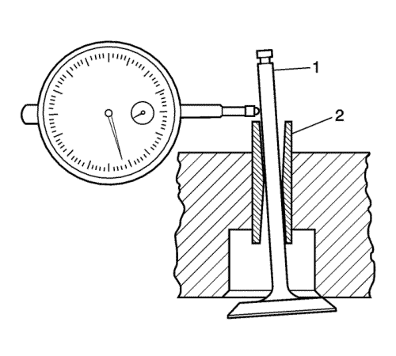
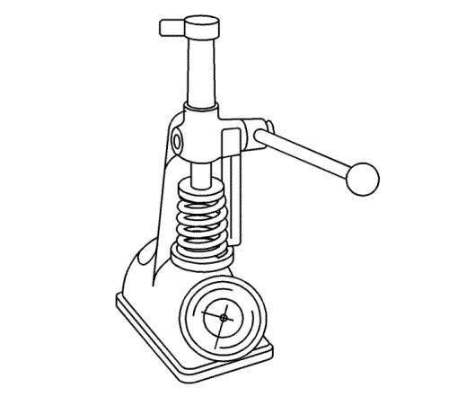
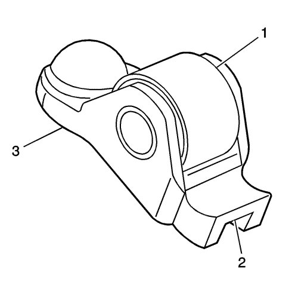
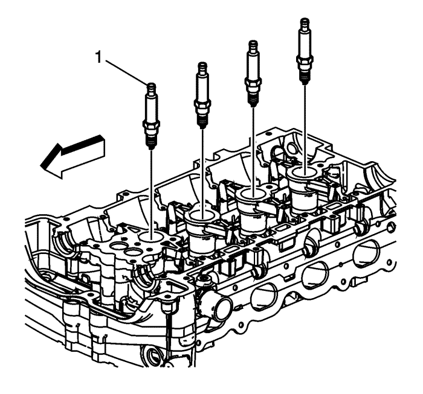
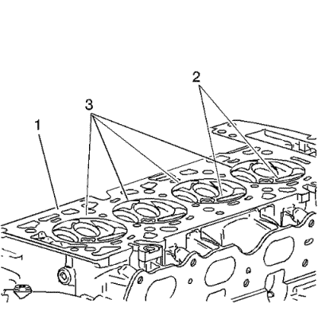
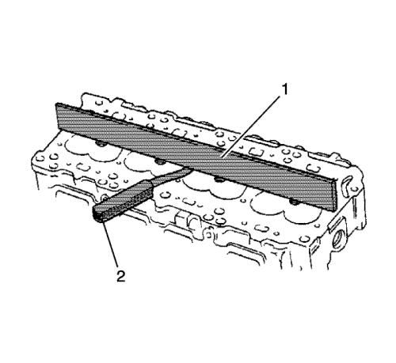
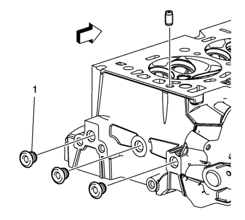

Limpieza y comprobación de la culata — LE5, LE8, LE9
Herramientas especiales
| • | J 7872 Comparador de pie magnético |
| • | J-22738-B Aparato de verificación de muelles de válvula |
Si desea informarse sobre herramientas regionales equivalentes, consultar Herramientas especiales .
Revisión y limpieza de la válvula

Nota: No utilice un cepillo de alambre sobre parte alguna del vástago de válvula.
Nota: No pula o acondicione la válvula de admisión. Si la válvula de admisión no cumple las especificaciones, sustituya la válvula.
- Limpie las válvulas de carbonilla, aceite y barniz. Utilice un cepillo de alambre blando para limpiar el carbón acumulado en la culata. El barniz puede eliminarse poniendo las piezas en remojo en disolvente. Consultar Adhesivos, líquidos, lubricantes y selladores .
- Limpie las guías de válvula.
- Revise si el vástago de válvula (4) está desgastado o picado.
- Revise si la ranura de la chaveta de válvula está desconchada o desgastada (5). Sustituya la válvula si está desgastada o desconchada.
- Compruebe si la cara de la válvula presenta quemaduras o grietas (1). Si hay piezas desprendidas, compruebe si hay daños el pistón correspondiente y en la zona de la culata.
- Compruebe si el vástago de válvula presenta rebabas y arañazos. Las rebabas y los arañazos de menor importancia pueden eliminarse con una piedra de aceite.
- Use bloques en V para comprobar si el vástago de válvula está recto (3) y si el platillo de válvula está doblado o deformado. Las válvulas dobladas o deformadas deben sustituirse.
- Limpie los depósitos de la cara de la válvula. Compruebe si la cara de válvula presenta ranuras.
- Sustituya la válvula si la cara está ranurada. Las caras de válvula no pueden maquinarse. Si las válvulas están desgastadas o dañadas, deben sustituirse.
- Sustituya la válvula si el diámetro exterior del platillo de válvula y el bisel (2) está desgastado o no cumple con la especificación. Consultar Rectificación del asiento y de la válvula .
- Las válvulas pueden solaparse ligeramente con los asientos de válvula.
- Sustituya la válvula si la punta de la válvula (6) está desgastada.
- Si no hay desgaste, picado, ranurado o distorsión evidentes, realice el procedimiento de medición y reacondicionamiento de la válvula para verificar que cumple con las especificaciones. Consultar Rectificación del asiento y de la válvula .
Medición de la guía de válvula

- Mida el juego del vástago de válvula (1) a la guía (2). Un juego excesivo del vástago de válvula a la guía puede producir un consumo de aceite excesivo y también puede hacer que se rompa la válvula. Un juego escaso dará como resultado un funcionamiento ruidoso y dificultoso de la válvula y reducirá la suavidad del conjunto de motor.
- Fije el indicador J 7872 a la culata en el carril de la tapa de los árboles de levas.
- Sitúe el dispositivo de medición de modo que el movimiento del vástago de válvula de un lado a otro, transversalmente a la culata, provoque un movimiento directo del vástago del indicador. El vástago del dispositivo de medición debe tocar el lado del vástago de válvula justo por encima de la guía de válvula.
- Deje caer el platillo de válvula aproximadamente 0,064 mm (0,0025 pulg.) del asiento de válvula.
- Ejerza poca presión al desplazar el vástago de válvula de lado a lado para determinar el juego. Puede consultar el juego adecuado en Especificaciones mecánicas del motor : LE5, LE9 .
Nota: El desgaste de la guía de válvula 10 mm (0,390 pulg.) en la parte inferior de ésta no es significativo para un funcionamiento normal.
- Si la holgura de la válvula es mayor que las especificaciones, y un vástago de válvula nuevo de diámetro estándar no ajustaría la holgura a las especificaciones, sustituya la culata.
Revisión y limpieza del muelle de válvula
- Limpie los muelles de la válvula en disolvente.
Advertencia: Consulte Advertencia, protección ocular en la sección Prólogo
- Seque los muelles de la válvula con aire comprimido.
- Revise si los muelles de la válvula tienen bobinas o extremos de bobinas rotos.

- Mida la tensión del muelle de válvula con el comprobador J 22738-B Consultar Especificaciones mecánicas del motor : LE5, LE9
- Si la carga del muelle de válvula es baja, sustituya los muelles de válvula. NO utilice suplementos para aumentar la carga del muelle. El uso de distanciadores puede provocar que el muelle de la válvula toque fondo antes de que el lóbulo del árbol de levas esté en su punto más elevado.
Limpieza e inspección de balancines de válvula

- Revise si el rodillo (1) del seguidor del árbol de levas presenta lo siguiente:
| • | Estrías y picado excesivo |
| • | Asegúrese de que el rodillo gira con libertad |
- Revise la zona de la punta de la válvula del seguidor del árbol de levas (2).
- Compruebe la zona pivotante (3) del compensador de juego hidráulico fijo (SHLA) del seguidor del árbol de levas.
- Sustituya el seguidor o seguidores según sea necesario.
Limpieza e inspección de las superficies de las juntas y de las culatas

- Extraiga las bujías (1).
- Revise la junta de la culata y las superficies de conexión para comprobar si presentan fugas, corrosión y partes saltadas. Si ha fallado la junta, utilice las siguientes averías para determinar cuál es la causa:
| 2.2. | Culata alabeada o floja |
| 2.3. | Pasadores de ajuste que faltan, no están en sus sitios o no están bien acoplados |
| 2.4. | Corrosión en la zona de retenes alrededor de los conductos de refrigerante |
| 2.5. | Virutas o residuos en los orificios de los tornillos de la culata |
| 2.6. | Orificios de tornillos en el bloque motor no taladrados o insuficientemente roscados |

- Revise la superficie de la junta de culata del cilindro.
| • | Se puede reutilizar la culata si sólo hay corrosión en una banda de 4 mm (0,375 pulg.) alrededor de cada cámara de combustión (1). |
| • | Sustituya la culata si la zona entre los asientos de válvula está agrietada (2). |
| • | Sustituya la culata si encuentra corrosión en una franja de 4 mm (0,375 pulg.) alrededor de alguna de las cámaras de combustión (3). |
- Limpie los pernos de la culata.
Nota: No utilice cepillos de alambre en la superficie de sellado de las juntas.
- Limpie la culata. Retire cualquier resto de barniz, hollín y carbonilla del metal desnudo.
- Limpie las guías de válvula.
- Limpie los orificios roscados. Utilice un cepillo de cerdas de nylon.
- Limpie los restos de sellante de los orificios de conexión.
- Examine los tornillos de culata en busca de roscados dañados o cabezas dañadas o estiradas ocasionados por un uso incorrecto de las herramientas.
- Sustituya todos los tornillos que muestren signos defectuosos.
- Examine la culata en busca de grietas. Compruebe entre los asientos de válvula y en las tubuladuras de escape.
Nota: No intente soldar la culata, sustitúyala por otra.
- Compruebe que la superficie de la culata no presenta corrosión, inserciones de arena y orificios.

- Utilizando un borde recto (1) y una galga de espesores (2), compruebe la planeidad de la superficie de la base de la culata. Consultar Especificaciones mecánicas del motor : LE5, LE9 . Si la culata no cumple las especificaciones, sustituya la culata. No rectifique la culata.
- Examine todos los orificios roscados por si están deteriorados. Las roscas deben reacondicionarse con suplementos de rosca.
- Compruebe las superficies de sellado.

- Compruebe los tapones de la culata (1) y verifique que el orificio de aceite esté lmpio y libre de restos.
| © Copyright Chevrolet Europe. All rights reserved |